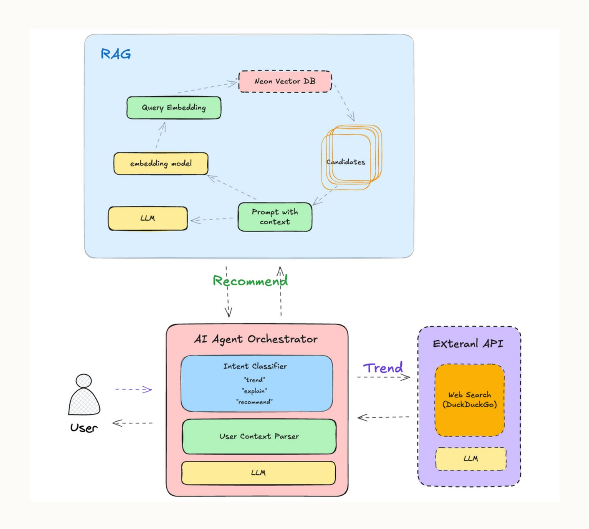

생성형 AI 수업 프로젝트
VIZY — K-뷰티 AI 에이전트
사용자의 뷰티 프로필, 제품 정보, 대화 맥락을 종합해 K-뷰티 제품을 추천하고 그 이유를 설명하는 RAG 기반 AI 에이전트입니다.

Overview
온라인 뷰티 추천은 자주 빗나갑니다. 같은 색이라도 조명, 카메라, 필터에 따라 다르게 보이고, HEX 코드나 별점만으로는 그 제품이 나에게 실제로 어울리는지 알기 어렵기 때문입니다.
VIZY는 생성형 AI 수업에서 3인 팀으로 진행한 프로젝트로, 이 문제를 세 가지 기능으로 풀었습니다. 사진 속 메이크업 색을 실제 제품과 매칭하는 Find the Look, 이미 쓰는 제품의 대체품을 찾아 주는 Find the Match, 그리고 사용자 프로필·과거 피드백·제품 데이터·웹 검색을 활용해 대화로 답하는 AI 뷰티 어시스턴트입니다.
저는 색상 매칭 결과를 개인 맞춤 추천으로 바꾸는 부분을 맡았습니다. 색상 기반 Top-3는 정확하지만 “조금 더 매트하게, 여름 쿨톤 느낌으로” 같은 요청에는 대응할 수 없었습니다. 그래서 추천 시스템을 만든 뒤, 사용자의 요청을 이해하고 의미 기반으로 제품을 검색해 취향에 맞게 재정렬하고 그 이유까지 설명하는 RAG 에이전트를 구축했습니다.


Key contributions
- LLM 기반 Top-3 추천 시스템 제품별 추천 이유를 함께 생성하는 Top-3 추천 시스템을 LLaMA 3로 구현한 뒤 OpenAI API로 전환하고, JSON 출력 고정과 프롬프트 제약으로 결과의 일관성 강화
- RAG 에이전트 워크플로우 사용자 메시지를 추천·설명·트렌드로 분류하고, 자연어 피드백을 톤·피니시·밝기·채도·선호/비선호 키워드 JSON으로 파싱해 알맞은 처리 흐름으로 분기
- 의미 검색 및 개인화 재랭킹 제품 설명과 사용자별 대화 이력을 OpenAI 임베딩으로 PostgreSQL + pgvector에 저장하고, 후보 20개를 검색한 뒤 벡터 유사도(1.0)·현재 취향(0.7)·저장된 프로필(0.3) 가중 점수로 최종 3개 선정
- 생성형 AI 기반 데이터 확장 가상 제품 리뷰와 퍼스널 컬러 데이터를 생성해, 정형 제품 정보만으로는 부족한 의미 검색용 비정형 데이터 확보
- 대화형 기능 및 UI 사용자별 대화 메모리와 DuckDuckGo 기반 트렌드 검색을 구현하고, React로 챗봇·추천 결과 화면 개발
Challenges and how I solved them
- LLaMA 3 출력이 불안정했습니다. LLaMA 3로 만든 취향 파싱과 추천 이유가 형식을 자주 벗어나거나 엉뚱한 답을 냈습니다. 이 단계를 OpenAI API로 옮기고 JSON으로만 출력하도록 고정했으며, 형식이 깨져도 JSON 부분만 다시 추출하거나 기본 문구로 대체하는 처리를 넣어 응답 하나 때문에 화면이 멈추지 않도록 했습니다.
- 색상 매칭만으로는 주관적인 요청을 따를 수 없었습니다. Top-3는 색은 정확했지만 “더 매트하게, 더 쿨하게” 같은 요청에는 대응하지 못했습니다. 그 위에 RAG 에이전트를 얹어, 요청을 구조화된 취향으로 바꾸고 의미 기반으로 검색한 뒤 그 취향에 맞게 재정렬하도록 했습니다.
- 모델이 없는 제품과 특징을 지어냈습니다. 초기 답변에는 DB에 없는 제품이나 우리가 주지 않은 특징이 섞여 나왔습니다. 프롬프트에서 후보 목록 안의 제품과 주어진 속성만 쓰도록 제한했습니다. 정확히 맞는 제품이 없을 때는 거절하는 대신 가장 가까운 제품을 추천하고 차이를 설명하도록 했습니다. 예를 들어 매트를 원하는 사용자에게 세미매트 제품을 이유와 함께 제안하는 식입니다.
- 저장된 프로필과 지금의 요청이 충돌했습니다. 저장된 프로필이 사용자가 방금 한 요청보다 우선되는 경우가 있었습니다. 현재 대화의 취향이 프로필보다 높은 가중치를 갖도록 점수를 설계해, 프로필은 순위를 살짝 조정하는 역할만 하도록 했습니다.
- DB로는 트렌드 질문에 답할 수 없었습니다. “올해 립 트렌드가 뭐야?” 같은 질문은 고정된 제품 DB에 답이 없습니다. 트렌드 의도로 분류되면 검색 대신 DuckDuckGo 상위 3개 결과를 가져와 사용자의 톤에 맞춰 요약하도록 분기했습니다.